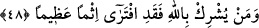

ALLÂH’IN BAĞIŞLAMASI
48- Allah, kendisine ortak koşulmasını aslâ bağışlamaz; bundan başkasını,
(günahları) dilediği kimse için bağışlar. Allah’a ortak koşan kimse büyük bir günah
(ile) iftirâ etmiş olur.
“Allah kendisine ortak koşulmasını aslâ bağışlamaz.” Allah, inkarla muttasıf
olanları, tevbe ve îmân etmezlerse bağışlamaz. Çünkü hikmet-i teşrîiyye, inkar kapısının
kapanmasını gerektirir. İnkarın, îmân etmeksizin bağışlanmasının câiz olması ise bu
kapının açılmasına götürür. Çünkü inkar ve ma’siyet karanlıklarını, ancak îmân nûru
aydınlatabilir. Îmânı olmayanın ise ne inkârı ne de ma’siyetleri bağışlanır. “Bundan
başkasını”, yâni çirkinlikte Allah’a ortak koşmaktan daha aşağı olan küçük olsun,
büyük olsun bütün günahları tevbe etmeseler bile kendi katından bir fazl ve ihsan olarak
bağışlar. Fakat herkesi değil sâdece şirkten başka günâhı olanlardan “dilediklerini
bağışlar.”
Şeyhim Atpazârî Osman Efendi şöyle diyor: “Allah’ın bağışlayacağı bu kişiler
Allah Teâlâ’ya ortak koşmaktan sakınan mü’minlerdir. Allah Teâlâ kendisine ortak
koşmadıkları için onların şirkten aşağı seviyedeki küçük-büyük bütün günahlarını
bağışlar. Allah’a ortak koştukları için müşriklerin şirk dışındaki günahlarını da
bağışlamaz. Mü’minlerin tam tersine müşriklerin şirkleri bağışlanmayacağı gibi şirkten
aşağı seviyedeki günahları da bağışlanmaz. Mü’minlere gelince Allah Teâlâ onları
kendisine ortak koşmaktan muhâfaza ederek şirkin azâbından koruduğu gibi şirkten aşağı
günahlarını bağışlayarak onları bu günahların azâbından da korumuştu.
“Allah’a ortak koşan kimse büyük bir günah ile iftirâ etmiş olur.” Yâni, kim bu
kadarı düşünülemeyecek ve yanında bütün günahların önemsiz kalacağı böyle bir günahı
işlerse onun için asla bağışlanma söz konusu olmaz.
Bu âyet-i kerime, bu ümmet için üzerine güneş doğup batan her şeyden daha hayırlı
olan âyetlerin en yüce ve en büyüklerindendir. Çünkü şirkten aşağı günahların
bağışlanmasının özellikle Muhammedîlerden muvahhid ve ihlâslı kulları için Kerîm
olan Zât’ın irâde ve vaadine bağlı, yerine getirilmesi kesin bir husus olduğunu
bildirmektedir. Nitekim Cenab-ı Hak onlara: “Allah şüphesiz bütün günahları
bağışlar.” (el-Zümer, 39/53) buyurmuştur.
Rivâyet edilir ki; Hz. Peygamber (s.a.v.)’in amcası Hamza (r.a.)’ın katili Vahşî,